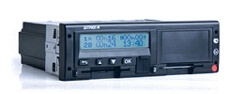
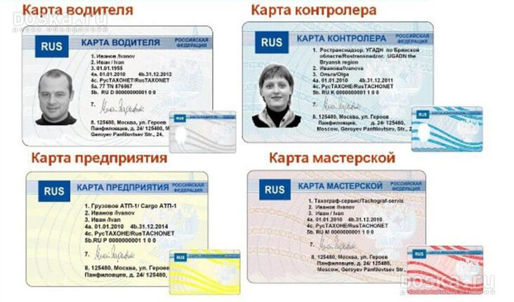

147@ps-volga.ru, 016@ps-volga.ru
Тахографы и карты водителей. Системы мониторинга
транспорта и учета топлива под ключ.
8 (442)601-911
8 (960) 882-52-45
Закажи тахограф с установкой
за 37 000!Заполни заявку сейчас!
Почему мы?
Быстрое и качественное обслуживание в любой точке Волгограда, Волгоградской и Ростовской областях, а так же Республике Калмыкия
Всегда в наличии абонентские терминалы, датчики уровня топлива и дополнительное оборудование
Мастерская номер 1 по качеству работ
Повышение эффективности работы автопарков. (Снижение затрат на ГСМ)
Проводим гарантийный и не гарантийный ремонт тахографов
Услуги диспетчеризации автопарков
Ведущий представитель НТЦ «Измеритель», ООО «РусАвтоКарт» в регионе по изготовлению карт водителей и предприятия
Высокий уровень безопасности передачи данных мониторинга
Большой опыт внедрения и сопровождения систем мониторинга транспорта (ГЛОНАСС)
Экономия денежных средств
Тахографы

«ШТРИХ-ТахоRUS» с блоком СКЗИ без модема GPRS
29 000 руб.
Купить
«АТОЛ Drive 5» с блоком СКЗИ без модема GPRS
29 000 руб.
Купить
Continental Automotive GmbH DTCO 3281
34 000 руб.
Купить
«ШТРИХ-ТахоRUS» с блоком СКЗИ и модемом GPRS
34 000 руб.
Купить
«Меркурий ТА-001» с блоком СКЗИ без модема GPRS
29 000 руб.
Купить
«Меркурий ТА-001» с блоком СКЗИ и модемом GPRS
34 000 руб.
Купить
«АТОЛ Drive 5» с блоком СКЗИ и модемом GPRS
34 000 руб.
Купить
Карты для тахографов
Изготовление — от 20 дней
Цена — от 2100 руб
Изготовление карт
для тахографов
водителя
предприятия
мастерской

Заполни заявку сейчас!
Тахограф ШТРИХ Тахо Rus (без модема)
36 000 руб
29 000 руб
Тахограф «Штрих-Тахо RUS» обладает рядом преимуществ, которые делают работу водителя комфортной, а жизненный цикл транспортного средства максимально продолжительным.
- Тахограф «Штрих-Тахо RUS» включает в себя приемник ГЛОНАСС/GPS в составе СКЗИ и соответствует законодательству РФ.
- Версия тахографа «Штрих-Тахо RUS» с модемом GSM/GPRS содержит два прибора в одном корпусе — тахограф и абонентский навигационно-связной терминал и обеспечивает:
— возможность мониторинга местоположения и параметров движения транспортных средств и передачу информации в режиме реального времени в диспетчерский центр или на транспортное предприятие;
— возможность удаленно снимать отчеты с тахографа без заезда в парк транспортного предприятия;
— возможность передачи сигнала «Тревога» от водителя;
— возможность отправки текстовых сообщений водителю и оганизации голосовой связи с водителем; - Минимизирует затраты транспортных предприятий на закупку и установку тахографов.
- Функция распечатки всех отчетов либо вывода информации на дисплей позволяет легко просматривать все данные о скорости движения, пробеге транспортного средства, режимах труда и отдыха водителя, событиях и неисправностях автомобиля.
- Отсутствие возможности несанкционированных перевозок и приписок невыполненных работ водителем, за счет непрерывной записи в память тахографа и карты водителя данных о работе транспортного средства и видах деятельности водителя.
- Исключение возможности манипуляции со стороны водителя с данными о скорости движения и пробега транспортного средства за счет контроля питания датчика скорости.
- Оценка профессиональных качеств водителя за счет определения ускорения транспортного средства и режимов торможения.
- Возможность подключения дополнительных датчиков топлива, температуры и др. через разъемы тахографа RS-485, RS-232, аналоговые входы, цифровые входы без применения дополнительных внешних блоков, что упрощает монтаж и снижает стоимость дополнительного оборудования и монтажных работ.
- Энергонезависимая память обеспечивает накопление и хранение данных тахографа в течение 366 дней без риска ее потери.
- Некорректируемые данные в СКЗИ о маршрутах движения, параметрах движения транспортного средства, режимах труда и отдыха водителя обеспечивают транспортным предприятиям выплаты страховых компаний в случае ДТП.
Почему тахограф «Штрих-Тахо RUS»
нравится водителям?
- Широкий антибликовый дисплей, крупные цифры и символы обеспечивают водителю визуальный комфорт восприятия выводимой информации.
- Функция автоматической настройки яркости дисплея в зависимости от времени суток, не отвлекая водителя.
- Правовая защита водителя, так как данные с тахографа могут быть использованы при рассмотрении страховых случаев при ДТП.
- Информирование водителя о времени оставшемся до остановки и подача звукового сигнала в случае нарушения водителем режимов труда и отдыха или параметров движения транспортных средств.
- Отображение на дисплее тахографа «Штрих-Тахо RUS» любых текстовых сообщений, отправленных из диспетчерского центра.
- Возможность передачи водителем сигнала «Тревога» при нажатии на встроенную или выносную кнопку.

Цена
29 000 рубОсновные преимущества тахографов
Меркурий ТА-001 для водителей ТС
- Большой защищенный от ударов графический дисплей с удобным многострочным меню и интуитивно понятным интерфейсом
- Настройка яркости, контрастности и угла обзора дисплея, автоматическая регулировка подсветки в зависимости от подсветки приборной панели
- Правовая защита водителя от недобросовестных контролёров, так как данные с тахографа имеют независимый юридически значимый статус, могут быть использованы при рассмотрении спорных ситуаций на дороге, страховых случаев, при разборе ДТП и пр.
- Информирование водителя о приближающемся окончании времени непрерывного нахождения за рулём ТС, о нарушениях водителем режимов труда и отдыха, скоростного режима
- Возможность голосовой связи с диспетчерской, приём текстовых сообщений, подачи сигнала тревоги; - защита от недобросовестных работодателей, пытающихся использовать труд водителя вне рамок, определенных законодательством
Основные преимущества для транспортных
предприятий и владельцев ТС
- Тахограф совмещает в себе два устройства, с одной стороны – цифровой тахограф, а с другой стороны наличие в нем приемника глобальной спутниковой навигационной системы ГЛОНАСС/ GPS и GSM-модема позволяет интегрировать тахограф в интеллектуальную транспортную систему и при этом не требуется установка дополнительной аппаратуры спутниковой навигации ГЛОНАСС
- Тахограф позволяет отслеживать местоположение, параметры движения ТС и передачу информации в режиме реального времени в диспетчерский центр или на транспортное предприятие
- Высокая скорость печати, удобная заправка чековой ленты, экономия бумаги при печати за счёт оригинальной конструкции принтера
- Выгрузка данных из тахографа через канал GPRS, что исключает необходимость заезда ТС в парк для снятия информации
- Безопасность в пути и сохранность грузов. Контроль во многом является средством обеспечения безопасности. Например, если автомобиль отклонился от намеченного маршрута или надолго остановился – это отображается на карте. А, значит, можно узнать у водителя причину. Если это ДТП, поломка или у диспетчера возникло подозрение в попытке хищения груза, можно вызвать на место экстренные службы, сообщив им координаты ТС. Вместе с тем, в тахографе предусмотрена возможность подключения тревожной кнопки, нажатие которой сообщит диспетчеру об экстренной ситуации с указанием местоположения ТС
- Реализована возможность подключения проводной или беспроводной гарнитуры для обеспечения голосовой или «громкой» связи в кабине автомобиля, приёма SMS-сообщений, телефонных звонков из запрограммированного списка абонентов, а также возможность обратного вызова
- Высокая скорость передачи данных, позволяющая за короткое время выгружать информацию из памяти тахографа на электронный носитель (USB флеш-диск) за последний год работы
- В тахографе применено несколько независимых систем оценки параметров движения автомобиля, работающих одновременно: датчик скорости, навигационная система ГЛОНАСС/GPS, 3D-сенсор движения (акселерометр), что позволяет исключить манипуляции со стороны водителя с данными о скорости движения и величине пробега ТС
- Возможность подключения дополнительных датчиков уровня топлива, температуры в рефрижераторе и др. через имеющиеся интерфейсы RS-485, RS-232, CAN-шину, аналоговые входы, цифровые входы без применения дополнительных внешних модулей
- Контроль расхода топлива. Убытки предприятий, располагающих парком из грузовых автомобилей и спецтехники, которые возникают в результате воровства ГСМ, сложно недооценить. Существует множество способов хищения и только одна объективная причина – отсутствие эффективной системы контроля и учета горючего. По оценкам экспертов установка тахографов с аппаратурой спутниковой навигации систем ГЛОНАСС позволяет сократить потребление топлива на 20- 40% в зависимости от сферы деятельности
- Повышение трудовой дисциплины водителей. Не секрет, что для многих водителей использование служебного транспорта для личных нужд является нормой. При этом топливо, потраченное на такие поездки, оплачивает компания, как и отработанное водителем время в полном объеме. После установки тахографа несанкционированные рейсы достаточно легко отследить. В итоге сокращается реальный пробег ТС, расходы на ГСМ, а водитель посвящает рабочие часы выполнению своих непосредственных обязанностей
- Улучшение качества работы. В течение первых нескольких дней с момента внедрения системы вы получите необходимые данные, анализ которых позволит скорректировать маршруты и расписание. В результате можно улучшить имидж компании и эффективность работы
- Тахограф позволяет выводить на экран и на печать различные данные, формировать отчёты о скорости движения, пробеге ТС, режимах труда и отдыха водителя, событиях и неисправностях ТС и пр.
- Некорректируемая регистрация информации в средстве криптографической защиты информации (СКЗИ) о маршрутах движения, параметрах движения транспортного средства, режимах труда и отдыха водителя позволяет иметь объективную, юридически значимую информацию, которую можно предъявить в страховой компании, в суде и пр. для доказывания своей правоты в случае ДТП.
- В тахографе реализована возможность программирования параметров GPRS-модема как с использованием карты мастерской, так и при помощи карты предприятия, что исключает необходимость обращения к мастерской для перепрограммирования параметров передачи данных на сервер службы GPS/ГЛОНАСС-мониторинга
Цифровой тахограф DTCO® 3283 – это прибор, который поможет автопарку работать более эффективно, обеспечивая контроль и регистрацию информации о скорости движения, маршруте движения, режимов труда и отдыха водителей.
Тахограф DTCO® 3283 VDO от Continental сочетает в себе удобство в управлении, немецкую точность и надежность – все, что нужно для качественной бесперебойной работы на протяжении длительного периода.
Прибор универсален: может устанавливаться на любой тип грузового транспортного средства или автобуса, тем самым сужая выбор до одной модели.
Тахограф VDO рекомендуют к установке и эксплуатации ведущие мировые автопроизводители как Mercedes-Benz, MAN, Scania, FORD, Mitsubishi, КАМАЗ, ЛИАЗ и др., что еще раз доказывает безусловное качество прибора.
Цифровой тахограф DTCO® 3283 полностью соответствует требованиям законодательства Российской Федерации. Качество, отвечающее требованиями международных стандартов, подтверждено сертификатами.
Высокий уровень качества
- Многолетний опыт компании в разработке и производстве тахографов всех типов
- Строгий контроль качества на производственных линиях
- Производство соответствует требованиям международных стандартов ИСО
- Бесперебойная работа и совместимость с любыми транспортными средствами, как отечественного, так и иностранного производства
Удобство в эксплуатации
- Беспроблемная установка в любые транспортные средства
- Интеграция и совместимость с системами мониторинга транспорта
- Возможность выгрузки данных и широкий спектр аналитических инструментов для обработки информации тахографов
- Управление тахографом осуществляется на интуитивном уровне за счет понятного и логичного текстового меню
- Жидкокристаллический дисплей 2х16 символов при угле изображения 30°. Такая комбинация характеристик позволяет водителю следить за работой устройства, не всматриваясь в дисплей, и полноценно контролировать ситуацию на дороге
- Возможность установки яркости и контрастности дисплея
- Обеспечивается оперативная замена блока СКЗИ и аккумуляторной батареи без вскрытия прибора
- Прибор автоматически предупредит водителя о неисправностях
- Автоматическая запись периодов вождения
- Формат автомагнитолы ISO 7736
- K-Line диагностика
- Пользовательский интерфейс идентичен стандартному тахографу DTCO 1381, соответствующему требованиям ЕСТР, поэтому водитель будет работать с привычным ему интерфейсом ЕСТР тахографа
Надежность
- Корпус прибора защищен от несанкционированного вскрытия, что предотвращает возможные манипуляции с тахографом
- Диапазон температур, при которых тахограф выполняет функции регистрации предусмотренных законом данных, составляет от -40⁰С до +70⁰С, что дает возможность осуществлять перевозки по всей территории России
- Гарантированный объем хранимых данных не менее 1 года
- Гарантийный срок на тахограф и детали комплектации (без учета навигационно-криптографического модуля) составляет 2 года с момента ввода в эксплуатацию при гарантийной наработке, не превышающей 150 000 км пробега автомобиля
Уникальные характеристики
- Соответствие тахографа стандартам по электромагнитной совместимости компонентов автомобиля, поэтому при установке DTCO 3283 в транспортное средство все бортовые системы будут работать корректно
- Сертификат, подтверждающий требования по взрывобезопасности максимального класса Т6 (подтверждается сертификатом Таможенного союза) – тахограф может быть установлен в любые автомобили, перевозящие опасные грузы
- Фиксация изменений напряжения питания бортовой сети транспортного средства, что помогает водителю диагностировать неисправность панели приборов
- Уровень потребления тока составляет не более 65 мА, что сравнимо с потреблением 2х лампочек подсветки
- Степень защиты тахографа с лицевой стороны от проникновения пыли и жидкости – IP54, это означает, что пыль и влага не попадут в токоведущие части устройства, продлив срок службы прибора
- Карты водителя/предприятия подаются автоматически, что повышает пылезащищенность прибора благодаря закрытию слотов при загрузке и выдаче карт
Возможности системы мониторинга
Мониторинг
местоположения
и параметров движения
в режиме реального времени
местоположения
и параметров движения
в режиме реального времени
Организация
голосовой связи
с водителем
голосовой связи
с водителем
Передача сигнала «Тревога»
от водителя диспетчеру
от водителя диспетчеру
Удаленная передача
тахографических данных
диспетчеру
тахографических данных
диспетчеру
Мониторинг транспорта и учет топлива
После внедрения мониторинга транспорта вы получаете:
1
Полный контроль расхода топлива (сливы, заправки) позволяет снизить затраты на топливо на 20-30%;
2
Недопущение
"левых" рейсов, повышение дисциплины водителей;
3
Контроль пробега
и реального расхода топлива;
4
Оптимальное планирование маршрутов
движения;
5
Отслеживание и ликвидация немотивированных простоев
транспорта.
Закажи тахограф с установкой
ШТРИХ Тахо RUS под ключ
за 37 000!
Заполни заявку сейчас!
Программное обеспечение
для мониторинга
Преимущества установки
тахографов у нас
Мастерская №1 по цене и качеству работ
Индивидуальный подход к каждому клиенту
Оборудование всегда в наличии
Многолетний опыт работы
Установка в кратчайшие сроки
Оснащено более 3000 машин
Волгоград, Волгоградская и Ростовская область, Республика Элиста
Наличие всех лицензий и допусков
Квалифицированные специалисты
Схема работы


{kind=link}
{kind=link}
{kind=link}
{kind=link}
{kind=link}
{kind=link}
{kind=link}
{kind=link}
{kind=link}
{kind=link}
{kind=link}
Наши контакты
Центральный офис
Волгоград, пр.Ленина, д.92 8 (8442) 49-33-33Бесплатный звонок с любого региона России
8 (800) 100-04-34
Москва
Москва, 1-й Люберецкий проезд, д. 2, к. 1, офис 407/1 (495) 725-90-93,+7-903-725-90-93
Отдел продаж, карты для тахографов
162@ps-volga.ruМастерская по тахографам
Волгоград, ул.Историческая, д.191г +7 960 882 52 45,8(8442) 601-911 147@ps-volga.ru
016@ps-volga.ru